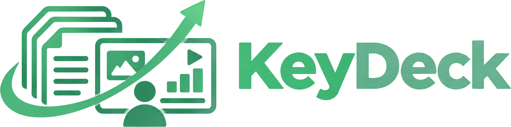
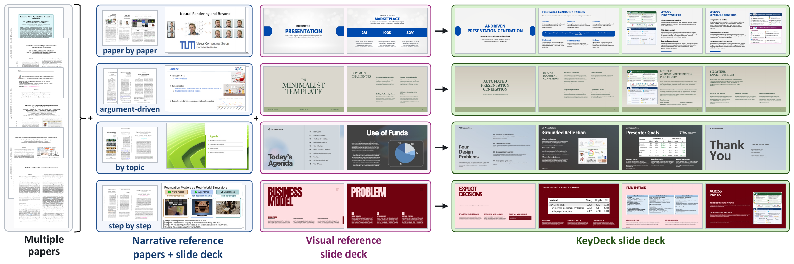
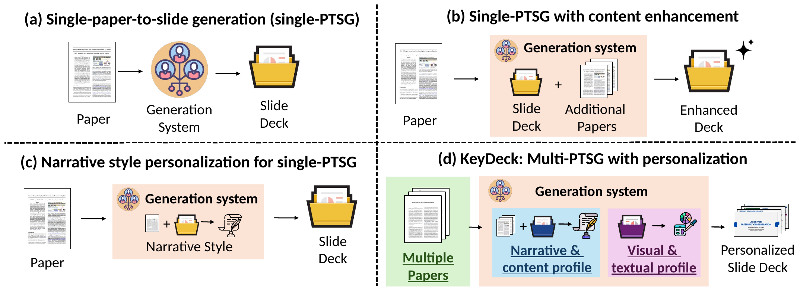
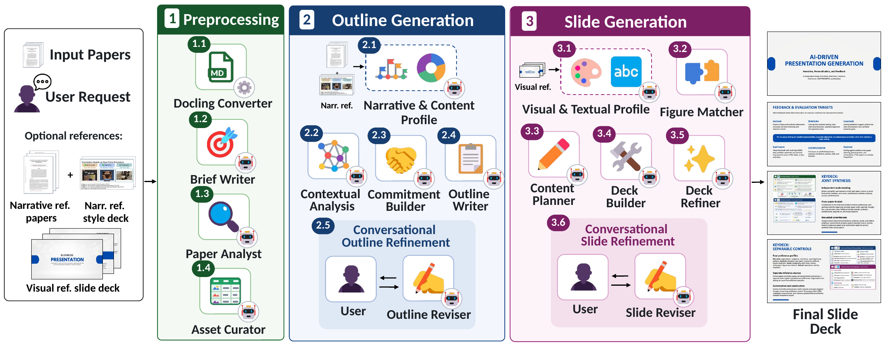
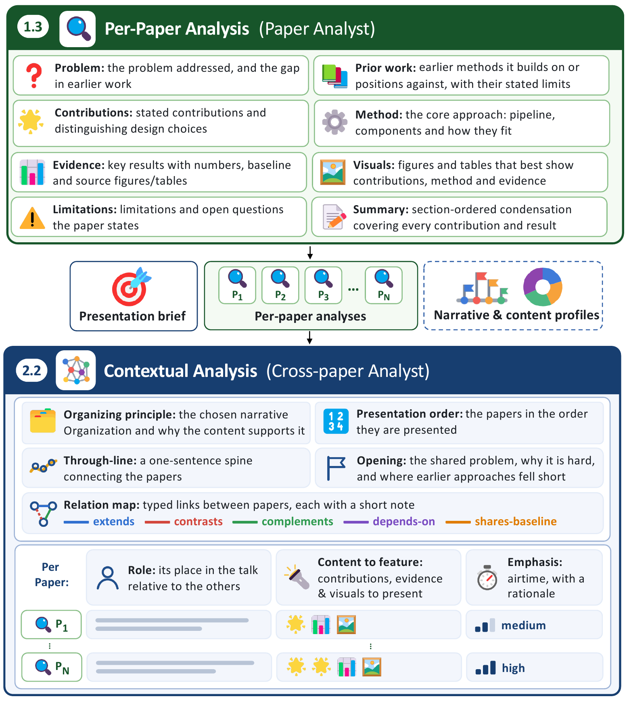
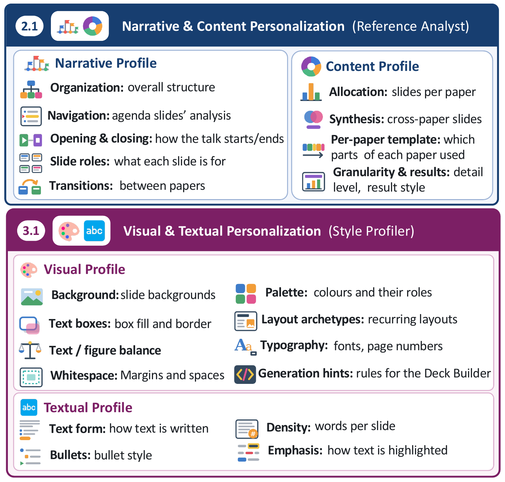
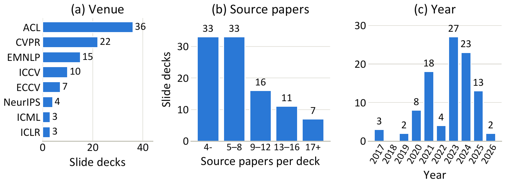
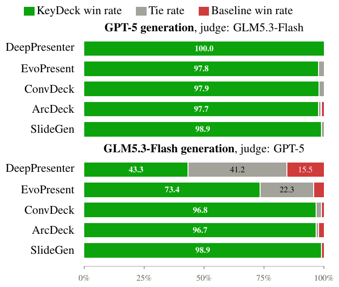
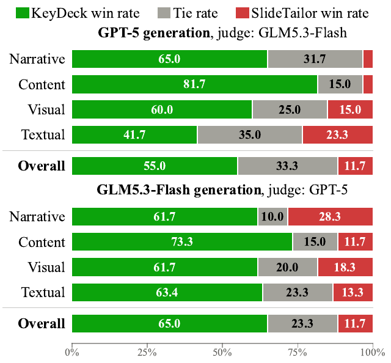

KeyDeck turns a collection of research papers into one coherent, editable presentation. A per-paper analysis first characterizes each paper on its own, and a cross-paper (contextual) analysis then relates the papers to each other and builds a single narrative across them. The deck is personalized from reference presentations: one for how the story is told, another for how the slides look and read.

Tutorials, keynotes, and survey talks draw on many papers at once, and the same papers can support very different talks depending on who presents them. Prior systems plan around a single source paper, treat extra papers as supplementary material, and personalize mostly from explicit instructions. KeyDeck plans jointly across all papers from the outset and infers the presenter's preferences from presentations they already have.

Per-paper analysis followed by joint cross-paper analysis finds a through-line, a presentation order, and a relation map, so the deck tells one story instead of concatenating summaries.
Narrative and content preferences come from a reference paper(s)–deck pair; visual and textual preferences come from a separate reference deck. The two can be mixed freely.
100 expert-authored multi-paper presentations paired with their source papers, with protocols for generation quality, personalization adherence, and conversational goal satisfaction.
KeyDeck takes one or more source PDFs, an optional natural-language request, and optional personalization references. Users can give free-text feedback on both the outline and the rendered slides; the final output is an editable PowerPoint presentation.

A Docling Converter turns each PDF into structured Markdown. A Brief Writer derives a presentation brief (purpose, audience, goal, tone, technical depth) from the request. A Paper Analyst independently profiles each paper in eight fields: problem, prior work, contributions, method, evidence, visuals, limitations, and summary. An Asset Curator builds a shared registry of figures and tables that later agents can draw from any paper.
A Cross-paper Analyst reads all per-paper analyses together and decides the organizing principle, presentation order, a central through-line, and a relation map over the papers (extends, contrasts, complements, depends-on, shares-baseline), then assigns each paper a role and emphasis. A Commitment Builder and an Outline Writer turn this into a slide-by-slide outline, which an Outline Reviser can edit from user feedback.
A Figure Matcher assigns figures and tables across the deck, letting synthesis slides draw evidence from several papers. A Content Planner writes source-grounded slide text with citations, a Deck Builder renders an HTML deck, and a Deck Refiner fixes overflow, contrast, whitespace, and figure sizing from rendered-slide measurements. A Slide Reviser applies user feedback, and the deck is exported to editable PPTX.
Both revisers follow the ReSpAct mechanism: they reason about a request, ask a clarifying question when it is ambiguous, and act through targeted editing tools, without regenerating unaffected slides. On request they can also retrieve background from the web or arXiv.
Decks are built in HTML for layout flexibility and exported with dom-to-pptx, so the result stays fully editable.
A multi-paper talk has to communicate how its sources connect, not summarize them one after another. KeyDeck gets there in two levels: it first understands each paper independently, then reasons over all of them jointly to decide what story the collection tells and what part each paper plays in it.

A Paper Analyst profiles every paper in eight fields: problem, prior work, contributions, method, evidence, visuals, limitations, and a summary of its principal contributions and supporting results. It runs without the user request or the presentation brief, so each paper is characterized before its relevance to the talk is decided.
A Cross-paper Analyst reads the brief and all per-paper analyses together. For the collection it sets an organizing principle and presentation order, a central through-line, an opening that establishes the shared problem, and a relation map with typed links: extends, contrasts, complements, depends-on, and shares-baseline.
Each paper is assigned a role in the narrative, the contributions, evidence, and visuals to feature, and a relative emphasis. When a content profile is available, its allocation preferences guide these decisions. The result is a structured JSON analysis that drives outline planning.
| Variant | Story Q/A | Depth Q/A | Narrative flow |
|---|---|---|---|
| w/o contextual analysis | 73.3 | 81.7 | 8.40 |
| w/o per-paper analysis | 71.7 | 75.0 | 8.40 |
| KeyDeck | 78.3 | 83.3 | 9.00 |
Ablation on 10 GPT-5-generated samples, evaluated by GLM. Removing either level lowers story- and depth-related question answering and narrative flow.
Preferences are rarely written down, but they show in the decks a presenter has already made. KeyDeck reads them from two optional references: a narrative reference (papers plus the deck that presented them) and a visual reference (any slide deck). The organization of one talk can be combined with the look of another.

Organization, navigation, transitions, and opening and closing patterns, inferred by a Reference Analyst from the narrative reference.
Slide allocation, per-paper structure, and how synthesis and results are used across the deck.
Backgrounds, typography, color roles, recurring layouts, graphical treatments, and the balance between text and figures, extracted by a Style Profiler.
Preferred forms of expression (paragraphs, bullets, or short phrases), text density, and emphasis conventions.
KeyBench pairs 100 source-paper sets with the expert-authored presentations built from them, collected from tutorials and keynotes at CVPR, ICCV, ECCV, ICLR, NeurIPS, ICML, ACL, and EMNLP and their workshops. We also release the full collection of 397 slide decks gathered from the same venues.

We evaluate multi-paper generation on KeyBench, single-paper generation on ArcBench, personalization against SlideTailor, and conversational goal satisfaction against ConvDeck and ConvHTML, with GPT-5 and GLM5.3-Flash as both generation backbones and judges.
| Method | Reference-based Q/A avg. (0–100) | Rubric-based quality avg. (0–10) | ||
|---|---|---|---|---|
| GPT judge | GLM judge | GPT judge | GLM judge | |
| SlideGen | 26.93 | 28.20 | 6.81 | 5.42 |
| ArcDeck | 44.05 | 47.30 | 7.18 | 5.25 |
| EvoPresent | 45.73 | 45.73 | 8.03 | 4.50 |
| ConvDeck | 45.00 | 47.10 | 7.12 | 4.11 |
| DeepPresenter | 15.67 | 19.65 | 5.57 | 4.30 |
| KeyDeck | 71.95 | 73.90 | 9.21 | 7.89 |
Multi-paper generation on KeyBench with GPT-5 as the generation model. Averages are over four Q/A categories (Story, Visuals, Hard, Depth) and four rubric dimensions (narrative flow, textual quality, visual thematic consistency, visual layout). KeyDeck also has the highest averages with GLM5.3-Flash generation (Q/A 69.47 / 71.92, rubric 9.34 / 8.84); see the paper for the full tables.


Six complete decks generated by KeyDeck, with and without personalization references, every slide in order. Use the arrows (or ← / → keys) to browse, and click a slide to enlarge it.
If you find KeyDeck or KeyBench useful, please cite our paper.
@article{ozden2026keydeck,
title = {KeyDeck: Multi-Paper-to-Slide Generation via Cross-Paper
Synthesis and Reference-Guided Personalization},
author = {Ozden, Tarik Can and VS, Sachidanand and
Motati, Ram Prakash Reddy and Kara, Ozgur and
Hakkani-T{\"u}r, Dilek and Kim, Junho and Rehg, James M.},
journal = {arXiv preprint},
year = {2026}
}